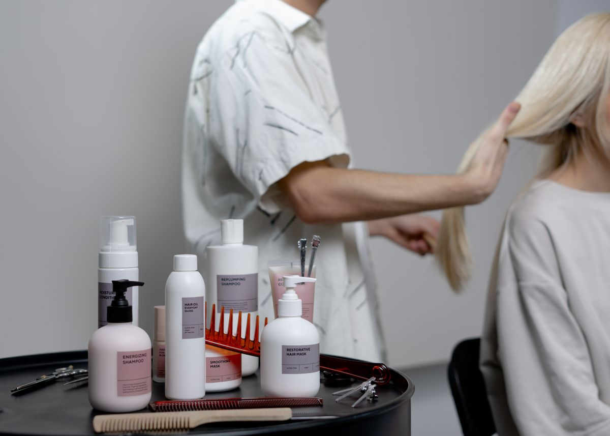
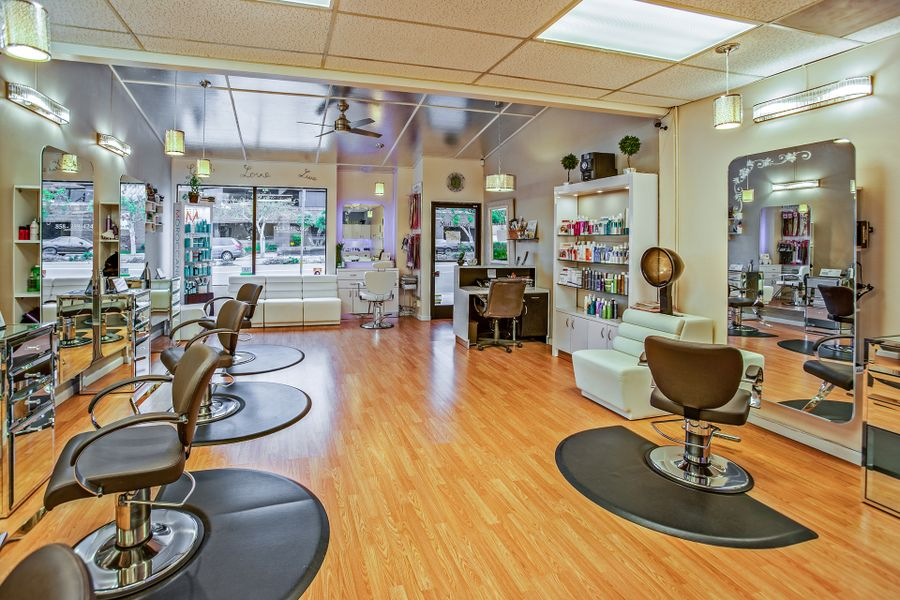
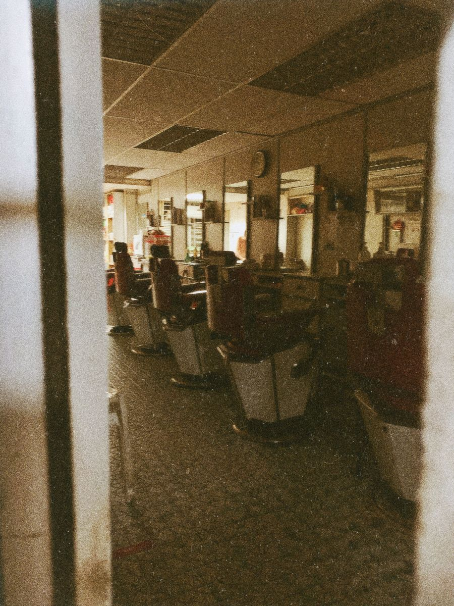
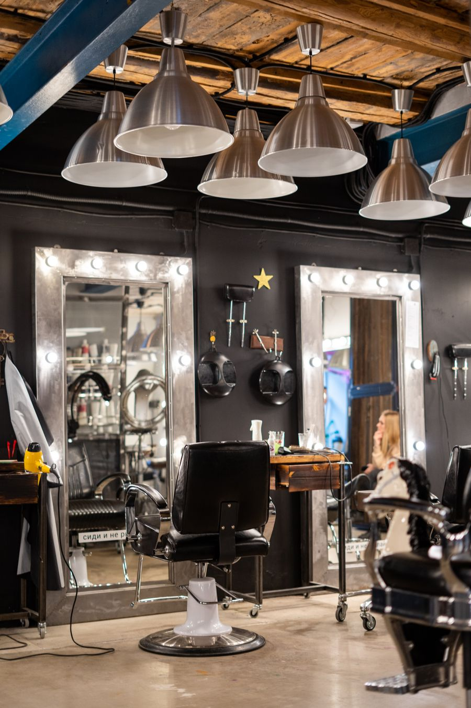

Női és férfi fodrászat Biatorbágy központjában. Vágás, festés, melír és alkalmi frizura, előre egyeztetett időpontban, várakozás nélkül.
Időpontot kérek
Az árak tájékoztató jellegűek, hosszú hajnál felár lehet. Fizetés készpénzzel vagy bankkártyával.



Tulajdonos, festés és melír a kedvence.
Alkalmi és menyasszonyi frizurák.
Férfi vágások, szakáll, gépi fade.
| Hétfő | zárva |
| Kedd–Péntek | 9:00–19:00 |
| Szombat | 8:00–13:00 |
| Vasárnap | zárva |
Hívj vagy írj üzenetet, és visszajelzünk egy szabad időponttal.
06 20 555 0123
Biatorbágy, Fő utca 00.
Parkolni a szalon előtt lehet.